BRNĚNSKÉ KOSTELY
Hl. stránka
Mapa kostelů
Kostely
Římskokatolické
Husitské
Evangelické
O projektu
Kontakt
WebServices
JavaScript
ŘÍMSKOKATOLICKÉ KOSTELY
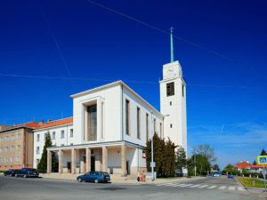
Kostel svatého
Augustina
(Brno-střed)
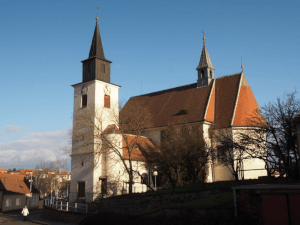
Kostel svatého
Bartoloměje
(Brno-Žebetín)
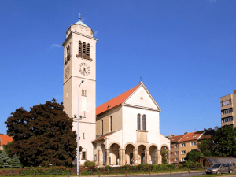
Kostel svatého
Cyrila a Metoděje
(Brno-Židenice)
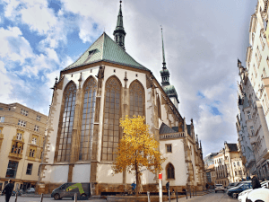
Kostel svatého
Jakuba Staršího
(Brno-střed)
Kostel svatého
Jana Křtitele a
svatého Jana Evangelisty
(Brno-střed)
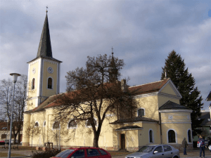
Kostel svatého
Jana Křtitele a
svatého Jana Evangelisty
(Brno-Bystrc)
Kostel svatého
Jana Nepomuckého
(Brno-Starý Lískovec)
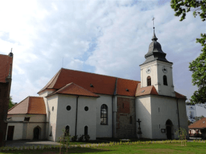
Kostel svatého
Jiljí
(Brno-Komárov)
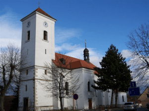
Kostel svatého
Jiljí
(Brno-Líšeň)
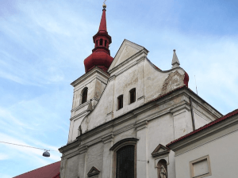
Kostel svatého
Josefa
(Brno-střed)
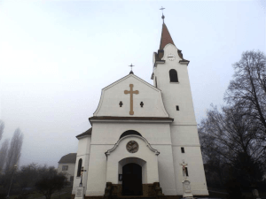
Kostel svatého
Klementa Maria
Hofbauera
(Brno-Komárov)
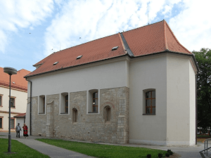
Kostel svaté
Kunhuty
(Brno-Židenice)
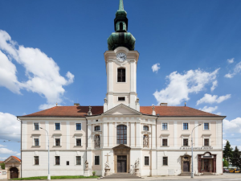
Kostel svatého
Leopolda
(Brno-střed)
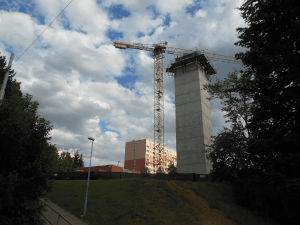
Kostel blahoslavené
Marie Restituty
(Brno-sever)
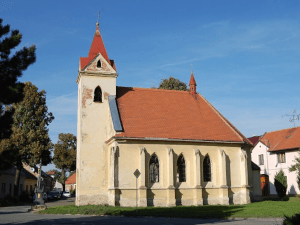
Kostel svaté
Markéty
(Brno-jih)
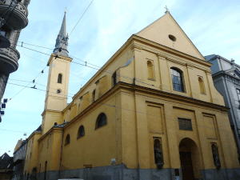
Kostel svaté
Máří Magdalény
(Brno-střed)
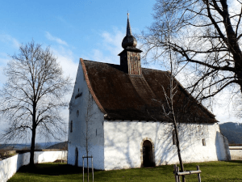
Kostel Matky Boží
na Veveří
(Brno-Bystrc)
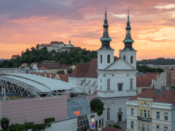
Kostel svatého
Michala archanděla
(Brno-střed)
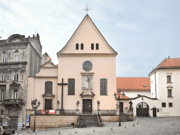
Kostel Nalezení
svatého Kříže
(Brno-střed)
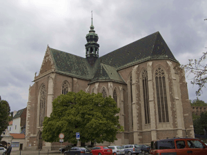
Bazilika Nanebevzetí
Panny Marie
(Brno-střed)
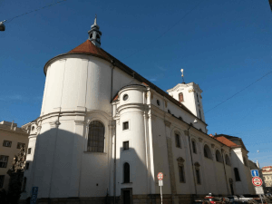
Kostel Nanebevzetí
Panny Marie
(Brno-střed)
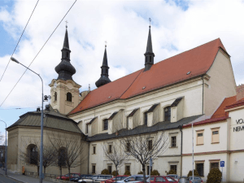
Kostel Nanebevzetí
Panny Marie
(Brno-Židenice)
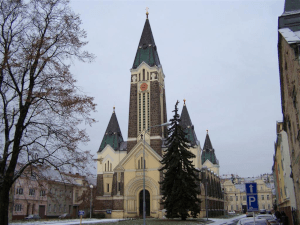
Kostel Nejsvětějšího
srdce Páně
(Brno-Husovice)
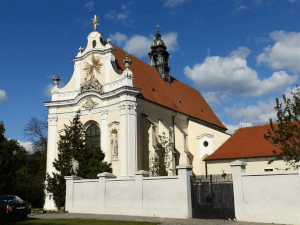
Kostel Nejsvětější
Trojice
(Brno-Královo Pole)
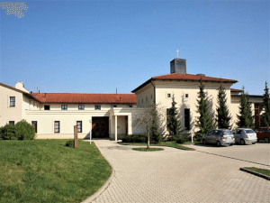
Kostel Neposkvrněného
početí Panny Marie
(Brno-sever)
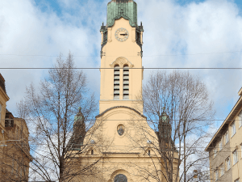
Kostel Neposkvrněného
početí Panny Marie
(Brno-střed)
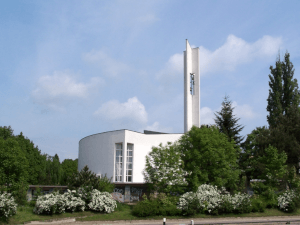
Kostel Panny Marie
Pomocnice křesťanů
(Brno-Žabovřesky)
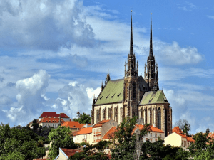
Katedrála svatého
Petra a Pavla
(Brno-střed)
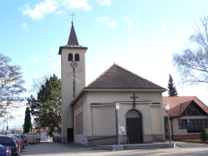
Kostel Povýšení
svatého Kříže
(Brno-Slatina)
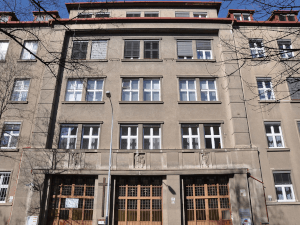
Kostel
Svaté rodiny
(Brno-střed)
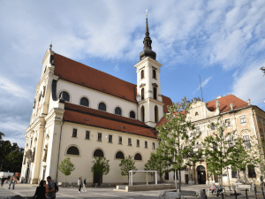
Kostel
svatého Tomáše
(Brno-střed)
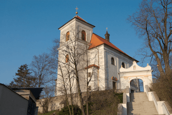
Kostel
svatého Václava
(Brno-Maloměřice a Obřany)
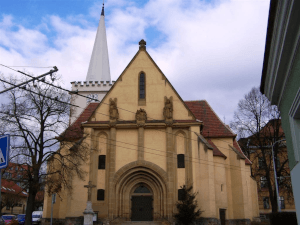
Kostel
svatého Vavřince
(Brno-Komín)
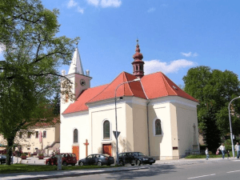
Kostel
svatého Vavřince
(Brno-Řečkovice)
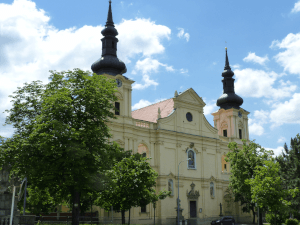
Kostel Zvěstování
Panny Marie
(Brno-Tuřany)